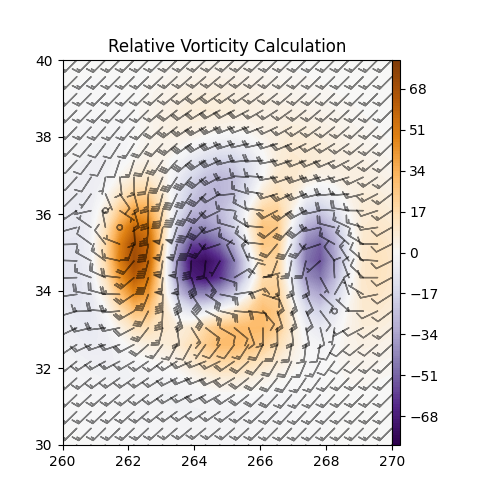

Note
Go to the end to download the full example code.
Vorticity#
Use metpy.calc.vorticity.
This example demonstrates the calculation of relative vorticity using the example xarray Dataset and plotting using Matplotlib.
import matplotlib.pyplot as plt
import metpy.calc as mpcalc
from metpy.cbook import example_data
# load example data
ds = example_data()
# Calculate the vertical vorticity of the flow
vort = mpcalc.vorticity(ds.uwind, ds.vwind)
# start figure and set axis
fig, ax = plt.subplots(figsize=(5, 5))
# scale vorticity by 1e5 for plotting purposes
cf = ax.contourf(ds.lon, ds.lat, vort * 1e5, range(-80, 81, 1), cmap=plt.cm.PuOr_r)
plt.colorbar(cf, pad=0, aspect=50)
ax.barbs(ds.lon.values, ds.lat.values, ds.uwind, ds.vwind, color='black', length=5, alpha=0.5)
ax.set(xlim=(260, 270), ylim=(30, 40))
ax.set_title('Relative Vorticity Calculation')
plt.show()
Total running time of the script: (0 minutes 0.145 seconds)